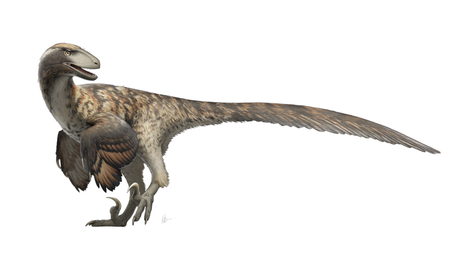

Deinonico
Deinonychus antirrhopus
Período
Viveu durante o período Cretáceo, há aproximadamente 115 a 108 milhões de anos.
Alimentação
Era carnívoro e se alimentava de outros animais, inclusive de herbívoros maiores que ele.
Características
Era um predador ágil, com cerca de 3 metros de comprimento, cauda rígida e uma grande garra em forma de foice no segundo dedo de cada pé.
Curiosidades
- Seu nome significa “garra terrível”.
- Seus fósseis foram encontrados na América do Norte.
- Sua descoberta ajudou a mudar a ideia de que os dinossauros eram animais lentos.